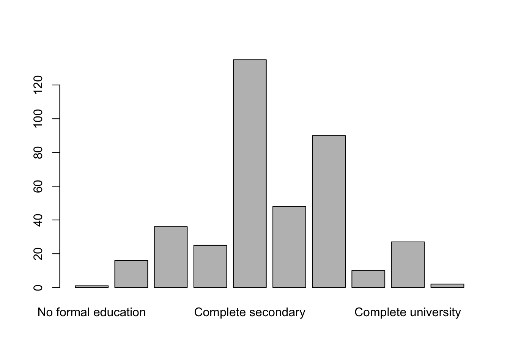

Data cleaning - Screening file
Paloma
2026-03-06
Last updated: 2026-03-23
Checks: 7 0
Knit directory: QUAIL-Mex/
This reproducible R Markdown analysis was created with workflowr (version 1.7.1). The Checks tab describes the reproducibility checks that were applied when the results were created. The Past versions tab lists the development history.
Great! Since the R Markdown file has been committed to the Git repository, you know the exact version of the code that produced these results.
Great job! The global environment was empty. Objects defined in the global environment can affect the analysis in your R Markdown file in unknown ways. For reproduciblity it’s best to always run the code in an empty environment.
The command set.seed(20241009) was run prior to running
the code in the R Markdown file. Setting a seed ensures that any results
that rely on randomness, e.g. subsampling or permutations, are
reproducible.
Great job! Recording the operating system, R version, and package versions is critical for reproducibility.
Nice! There were no cached chunks for this analysis, so you can be confident that you successfully produced the results during this run.
Great job! Using relative paths to the files within your workflowr project makes it easier to run your code on other machines.
Great! You are using Git for version control. Tracking code development and connecting the code version to the results is critical for reproducibility.
The results in this page were generated with repository version 62e53ab. See the Past versions tab to see a history of the changes made to the R Markdown and HTML files.
Note that you need to be careful to ensure that all relevant files for
the analysis have been committed to Git prior to generating the results
(you can use wflow_publish or
wflow_git_commit). workflowr only checks the R Markdown
file, but you know if there are other scripts or data files that it
depends on. Below is the status of the Git repository when the results
were generated:
Ignored files:
Ignored: .DS_Store
Ignored: .RData
Ignored: .Rhistory
Ignored: .Rproj.user/
Ignored: analysis/.DS_Store
Ignored: analysis/.RData
Ignored: analysis/.Rhistory
Ignored: analysis/Hrs_by_HWISE score.png
Ignored: analysis/stacked_barplot.png
Ignored: code/.DS_Store
Ignored: data/.DS_Store
Ignored: figure/.DS_Store
Ignored: output/.DS_Store
Ignored: output/figures/.DS_Store
Ignored: output/tables/.DS_Store
Untracked files:
Untracked: .claude/
Untracked: analysis/06.unadjusted_models.Rmd
Untracked: analysis/07.aim1_models.Rmd
Untracked: analysis/08.aim2_models.Rmd
Untracked: output/figures/06.Unadj_coef_EMO.png
Untracked: output/figures/06.Unadj_coef_PSS.png
Untracked: output/figures/07.aim1_panel_a_coef_plot.png
Untracked: output/figures/07.aim1_panel_b_coef_plot.png
Untracked: output/figures/07.aim2_emo_forest.png
Untracked: output/figures/07.aim2_pss_forest.png
Untracked: output/figures/08.aim2_emo_forest.png
Untracked: output/figures/08.aim2_pss_forest.png
Untracked: output/tables/04.Table1_full_descriptives.docx
Untracked: output/tables/04.Table2_HWISE_PSS_by_season.docx
Untracked: output/tables/04.Table3_HWISE_PSS_by_neighborhood.docx
Untracked: output/tables/06.TableUnadj1_unadjreg_PSS.docx
Untracked: output/tables/06.TableUnadj2_unadjreg_EmoType.docx
Untracked: output/tables/06.Tables_Unadj_ForestPlot_Results.docx
Untracked: output/tables/07.Tables_Aim1_ForestPlot_Results.docx
Untracked: output/tables/07.aim1_models.docx
Untracked: output/tables/07.aim1_models_core.docx
Untracked: output/tables/08.TableUV1_uvreg_PSS.docx
Untracked: output/tables/08.TableUV2_uvreg_EmoType.docx
Untracked: output/tables/08.Table_All_Emotion_models.docx
Untracked: output/tables/08.Table_All_PSS_models.docx
Untracked: output/tables/08.Tables_ForestPlot_Results.docx
Untracked: output/tables/08.adjusted_models.docx
Untracked: output/tables/08.adjusted_models_core.docx
Untracked: output/tables/09.Tables_UV_ForestPlot_Results.docx
Untracked: output/tables/~$.Tables_Aim1_ForestPlot_Results.docx
Untracked: output/tables/~$.missing_table.docx
Untracked: output/tables/~$.missing_table_by_season.docx
Unstaged changes:
Modified: analysis/01.Data_cleaning.Rmd
Modified: analysis/04.Descriptive_stats.Rmd
Deleted: analysis/07.aim2_emo_models.Rmd
Deleted: analysis/07.aim2_pss_models.Rmd
Deleted: analysis/08.forest_plot_tables.R
Deleted: analysis/08.multivariate_models.Rmd
Deleted: analysis/08.univariate_models.Rmd
Deleted: analysis/09.uv_forest_plot_tables.R
Modified: analysis/_site.yml
Modified: data/01.Screening_clean.csv
Modified: data/01.conflicts_reviewed.csv
Modified: data/01.conflicts_reviewed_V2.csv
Modified: data/01.conflicts_to_review.csv
Modified: data/02.Merged_Screening_HWISE_PSS.csv
Modified: data/03.Merged_Q1-6.csv
Modified: data/03.Merged_Q1-6_Q16_Q19_Q26_Q28.csv
Modified: output/figures/07.UV_coef_EMO.png
Modified: output/figures/07.UV_coef_PSS.png
Modified: output/figures/07.famd_cos2_heatmap.png
Modified: output/figures/07.famd_var_contrib.png
Modified: output/figures/07.famd_var_map.png
Modified: output/figures/07.pca_heatmap.png
Modified: output/figures/07.pca_loadings.png
Modified: output/figures/07.poly_cor_heatmap.png
Modified: output/figures/07.poly_pca_heatmap.png
Modified: output/figures/07.poly_pca_loadings.png
Deleted: output/figures/UV_coef_EMO.png
Deleted: output/figures/UV_coef_PSS.png
Deleted: output/figures/famd_cos2_heatmap.png
Deleted: output/figures/famd_scores.png
Deleted: output/figures/famd_scree.png
Deleted: output/figures/famd_var_contrib.png
Deleted: output/figures/famd_var_map.png
Deleted: output/figures/panel_a_coef_plot.png
Deleted: output/figures/panel_b_coef_plot.png
Deleted: output/figures/pca_heatmap.png
Deleted: output/figures/pca_loadings.png
Deleted: output/figures/pca_scores.png
Deleted: output/figures/pca_scree.png
Deleted: output/figures/poly_cor_heatmap.png
Deleted: output/figures/poly_pca_heatmap.png
Deleted: output/figures/poly_pca_loadings.png
Deleted: output/figures/poly_pca_scores.png
Deleted: output/figures/poly_pca_scree.png
Deleted: output/figures/ses_comparison_panel_a.png
Deleted: output/figures/ses_comparison_panel_b.png
Modified: output/tables/04.Table1_sample_characteristics.docx
Modified: output/tables/04.missing_table.docx
Modified: output/tables/04.missing_table_by_season.docx
Modified: output/tables/07.Table_Top5_Emotion_models.docx
Modified: output/tables/07.Table_Top5_PSS_models.docx
Modified: output/tables/08.multivariate_models.docx
Modified: output/tables/08.multivariate_models_core.docx
Deleted: output/tables/Table1_sample_characteristics.docx
Deleted: output/tables/TableS1.2_missing_data.docx
Deleted: output/tables/TableS1_full_descriptives.docx
Deleted: output/tables/TableS2_HWISE_PSS_by_season.docx
Deleted: output/tables/TableS3_HWISE_PSS_by_neighborhood.docx
Modified: output/tables/Tables_ForestPlot_Results.docx
Modified: output/tables/Tables_UV_ForestPlot_Results.docx
Deleted: output/tables/missing_table.docx
Deleted: output/tables/missing_table_by_season.docx
Note that any generated files, e.g. HTML, png, CSS, etc., are not included in this status report because it is ok for generated content to have uncommitted changes.
There are no past versions. Publish this analysis with
wflow_publish() to start tracking its development.
Introduction
Data cleaning script for 01.SCREENING.csv. The goal is
to produce a clean, analysis-ready dataset for the descriptive
statistics table and regression models. This script covers: duplicate
merging, missing code assignment, variable recoding, SES composite
scoring, and a missingness summary.
Missing data coding scheme:
- 999 = Missing / lost / data entry error
- 333 = Pending (data exists but not yet entered)
- 888 = Don’t know
- 777 = Refused / prefer not to answer
- 666 = Illegible
- 555 = Other (answer outside allowed categories)
- 444 = Ambiguous
No = 0, Yes = 1, Occasionally = 2 (unless variable-specific rules apply). Sentinel codes are preserved in the master file and converted to NA only within analysis scripts.
Important modifications to include in manuscript
- Age range was modified to 18-46 to include three participants
- Rainy season is 0, dry season is 1.
Permanently excluded participants (removed from all databases and analyses):
The following four participants are excluded at the start of this script and must not appear in any analysis, table, or model:
| ID | Reason |
|---|---|
| 10 | Does not meet the inclusion criteria: participant is 49 years old (eligibility range: 18–46). |
| 141 | Participant did not continuously reside in the study neighborhood; she moved between different neighborhoods during the study period, violating the residential stability criterion. |
| 164 | This ID number was skipped during data collection and was never assigned to a participant; it does not exist in the dataset. |
| 427 | Participant appeared not to understand the survey questions, suggesting a linguistic or cognitive limitation that compromises data validity. |
Setup
1. Load raw data
Raw dimensions: 539 35 Unique IDs in raw file: 400 Duplicate IDs: 139 2. Standardize text before merging
Convert known missing-text patterns to NA so they don’t interfere with the merge logic. All other values are preserved.
na_strings <- c("N/A", "n/a", "NA", "na",
"No hay niguna repuesta", "No hay ninguna repuesta")
# "pending" means data exists but was not entered — code as 333, not NA
pending_strings <- c("pending", "Pending", "PENDING")
df_raw <- df_raw %>%
mutate(across(where(is.character), ~ {
x <- str_trim(.)
case_when(
x %in% na_strings ~ NA_character_,
x %in% pending_strings ~ "333",
TRUE ~ x
)
}))2.1 Preserve raw values before any recoding
Raw copies are created here, before merging or recoding, so that
_RAW columns always reflect the original data entry.
vars_to_preserve <- c("HLTH_TTM", "HLTH_MED", "HLTH_CPAIN",
"HLTH_CDIS", "HLTH_SMK", "D_EMP_TYPE", "D_CHLD",
"SES_EDU_CAT")
df_raw <- df_raw %>%
mutate(across(all_of(vars_to_preserve),
~ ., .names = "{.col}_RAW"))3. Merge duplicate rows
For IDs with two rows, take the non-NA value when rows differ. If both rows have different non-NA values for the same field, the conflict is flagged with 444 (Ambiguous) so it can be reviewed manually.
merge_rows <- function(df_group) {
if (nrow(df_group) == 1) return(df_group)
merged <- df_group[1, , drop = FALSE] # start with first row as template
# Skip ID — it is the same by definition
skip_cols <- c("ID")
for (col in setdiff(names(df_group), skip_cols)) {
v1 <- df_group[[col]][1]
v2 <- df_group[[col]][2]
both_na <- is.na(v1) & is.na(v2)
only_v2 <- is.na(v1) & !is.na(v2)
both_same <- !is.na(v1) & !is.na(v2) &
(str_trim(tolower(as.character(v1))) ==
str_trim(tolower(as.character(v2))))
conflict <- !is.na(v1) & !is.na(v2) &
(str_trim(tolower(as.character(v1))) !=
str_trim(tolower(as.character(v2))))
if (both_na) { merged[[col]] <- NA }
else if (only_v2) { merged[[col]] <- v2 }
else if (both_same) { merged[[col]] <- v1 }
else if (conflict) {
# Free-text/notes columns: concatenate instead of flagging
if (col %in% c("D_LOC_INFO", "D_HH_SIZE_INFO", "D_INFO",
"SES_INFO", "HLTH_CPAIN_CAT", "HLTH_CDIS_CAT")) {
merged[[col]] <- paste(v1, v2, sep = " | ")
} else {
merged[[col]] <- "444" # Ambiguous — review manually
}
}
}
return(merged)
}
df <- df_raw %>%
group_by(ID) %>%
group_modify(~ merge_rows(.x)) %>%
ungroup()
cat("Rows after merging duplicates:", nrow(df), "\n")Rows after merging duplicates: 400 # Report which fields were flagged as ambiguous
ambig_flags <- df %>%
select(-ID) %>%
summarise(across(everything(), ~ sum(. == "444", na.rm = TRUE))) %>%
pivot_longer(everything(), names_to = "variable", values_to = "n_ambiguous") %>%
filter(n_ambiguous > 0)
cat("\nFields with ambiguous (444) values after merge:\n")
Fields with ambiguous (444) values after merge:print(ambig_flags, n=nrow(ambig_flags))# A tibble: 14 × 2
variable n_ambiguous
<chr> <int>
1 D_YRBR 2
2 D_AGE 50
3 D_LOC_CODE 2
4 D_LOC_TIME 1
5 HLTH_SMK 1
6 HLTH_CDIS_CAT 1
7 D_HH_SIZE 2
8 D_CHLD 2
9 D_EMP_TYPE 3
10 W_HH_SIZE 1
11 W_STORAGE 2
12 HLTH_SMK_RAW 1
13 D_EMP_TYPE_RAW 3
14 D_CHLD_RAW 2# Print ID and conflicting values for manual review
for (v in ambig_flags$variable) {
cat("\n---", v, "---\n")
conflict_ids <- df %>%
filter(.data[[v]] == "444") %>%
pull(ID)
print(df_raw %>%
filter(ID %in% conflict_ids) %>%
select(ID, all_of(v)))
}
--- D_YRBR ---
ID D_YRBR
1 329 2001
2 329 2002
3 376 1993
4 376 1998
--- D_AGE ---
ID D_AGE
1 322 33
2 322 34
3 324 20
4 324 21
5 325 43
6 325 44
7 326 35
8 326 36
9 327 27
10 327 28
11 328 43
12 328 44
13 331 34
14 331 35
15 332 45
16 332 46
17 333 31
18 333 32
19 335 27
20 335 28
21 336 32
22 336 33
23 337 33
24 337 34
25 338 22
26 338 23
27 339 37
28 339 38
29 340 30
30 340 31
31 341 33
32 341 34
33 343 27
34 343 28
35 344 30
36 344 31
37 345 24
38 345 25
39 362 28
40 362 29
41 364 33
42 364 34
43 365 32
44 365 33
45 366 43
46 366 44
47 367 32
48 367 33
49 368 41
50 368 42
51 369 32
52 369 33
53 370 34
54 370 35
55 371 37
56 371 38
57 372 30
58 372 31
59 373 31
60 373 32
61 374 37
62 374 38
63 375 25
64 375 24
65 376 29
66 376 25
67 377 19
68 377 20
69 378 22
70 378 23
71 379 38
72 379 39
73 380 39
74 380 40
75 381 18
76 381 19
77 382 27
78 382 28
79 383 24
80 383 25
81 384 44
82 384 45
83 385 21
84 385 22
85 386 20
86 386 21
87 387 22
88 387 23
89 388 37
90 388 38
91 389 33
92 389 34
93 390 26
94 390 27
95 391 30
96 391 29
97 393 29
98 393 30
99 395 18
100 395 19
--- D_LOC_CODE ---
ID D_LOC_CODE
1 391 9640
2 391 9690
3 496 9780
4 496 9960
--- D_LOC_TIME ---
ID D_LOC_TIME
1 394 3
2 394 31
--- HLTH_SMK ---
ID HLTH_SMK
1 24 No
2 24 Yes
--- HLTH_CDIS_CAT ---
ID HLTH_CDIS_CAT
1 71 444
--- D_HH_SIZE ---
ID D_HH_SIZE
1 190 6
2 190 3
3 191 3
4 191 8
--- D_CHLD ---
ID D_CHLD
1 415 333
2 415 2
3 427 1
4 427 4
5 427 4
--- D_EMP_TYPE ---
ID D_EMP_TYPE
1 320 Trabajo domestico. Trabajo comerciante.
2 320 informal
3 320 <NA>
4 334 Si, seguridad privada.
5 334 formal
6 334 <NA>
7 394 Comerciante
8 394 Informal
--- W_HH_SIZE ---
ID W_HH_SIZE
1 453 15
2 453 viven mas familias ahi. llave sole en lavando
--- W_STORAGE ---
ID W_STORAGE
1 427 tambos chiquitos--> turnos (3 famen terreno) --> una toma de agua
2 427 tambos chiquitos --> turnos (3 fam en terreno) --> una toma de agua
3 427 tambos chiquitos --> turnos (3 fam en terreno) --> una toma de agua
4 476 tinaco --> bathroom (baniarse)\nbotes--> 2 llaves directo de calle
5 476 Tinaco--> bathroom. Botes--> 2 llaves directo de calle
--- HLTH_SMK_RAW ---
ID HLTH_SMK_RAW
1 24 No
2 24 Yes
--- D_EMP_TYPE_RAW ---
ID D_EMP_TYPE_RAW
1 320 Trabajo domestico. Trabajo comerciante.
2 320 informal
3 320 <NA>
4 334 Si, seguridad privada.
5 334 formal
6 334 <NA>
7 394 Comerciante
8 394 Informal
--- D_CHLD_RAW ---
ID D_CHLD_RAW
1 415 333
2 415 2
3 427 1
4 427 4
5 427 43.1. Export conflicts for manual resolution
conflict_rows <- list()
for (v in ambig_flags$variable) {
conflict_ids <- df %>%
filter(.data[[v]] == "444") %>%
pull(ID)
tmp <- df_raw %>%
filter(ID %in% conflict_ids) %>%
select(ID, all_of(v)) %>%
mutate(across(c(ID, all_of(v)), as.character)) %>%
group_by(ID) %>%
summarise(value_1 = first(.data[[v]]),
value_2 = last(.data[[v]]),
.groups = "drop") %>%
mutate(variable = v, resolution = NA_character_)
conflict_rows[[v]] <- tmp
}
conflicts <- bind_rows(conflict_rows) %>%
select(ID, variable, value_1, value_2, resolution)
# ── Missing / sentinel values in analytic variables ───────────────────────────
# Variables to scan, with an optional paired notes column for context
MISSING_CODES_NUM <- c(999, 888, 777, 666, 555, 444, 333)
review_vars_notes <- list(
D_AGE = NA,
D_LOC_TIME = "D_LOC_INFO",
HLTH_SMK = NA,
HLTH_TTM = NA,
HLTH_MED = NA,
HLTH_CPAIN = NA,
HLTH_CDIS = NA,
D_CHLD = NA,
D_EMP_TYPE = NA,
SES_EDU_CAT = NA,
SES_EDU_SC = NA,
SES_BTHR_SC = NA,
SES_CAR_SC = NA,
SES_INT_SC = NA,
SES_WRK_SC = NA,
SES_BEDR_SC = NA
)
missing_rows <- lapply(names(review_vars_notes), function(v) {
notes_col <- review_vars_notes[[v]]
if (!v %in% names(df_raw)) return(NULL)
tmp <- df_raw %>%
group_by(ID) %>%
slice(1) %>% # one row per ID (duplicates already handled above)
ungroup() %>%
mutate(
.val = as.character(.data[[v]]),
.val_num = suppressWarnings(as.numeric(.val)),
.flag = is.na(.val_num) | .val_num %in% MISSING_CODES_NUM
) %>%
filter(.flag) %>%
transmute(
ID = as.character(ID),
variable = v,
value_1 = .val,
value_2 = if (!is.na(notes_col) && notes_col %in% names(df_raw))
as.character(.data[[notes_col]])
else NA_character_,
resolution = NA_character_
)
if (nrow(tmp) > 0) tmp else NULL
})
missing_conflicts <- bind_rows(Filter(Negate(is.null), missing_rows))
conflicts_all <- bind_rows(conflicts, missing_conflicts) %>%
arrange(variable, as.integer(ID))
cat("Missing/sentinel rows added per variable:\n")Missing/sentinel rows added per variable:missing_conflicts %>%
count(variable) %>%
print(n = Inf)# A tibble: 16 × 2
variable n
<chr> <int>
1 D_AGE 2
2 D_CHLD 21
3 D_EMP_TYPE 400
4 D_LOC_TIME 36
5 HLTH_CDIS 400
6 HLTH_CPAIN 400
7 HLTH_MED 400
8 HLTH_SMK 400
9 HLTH_TTM 400
10 SES_BEDR_SC 19
11 SES_BTHR_SC 27
12 SES_CAR_SC 20
13 SES_EDU_CAT 400
14 SES_EDU_SC 20
15 SES_INT_SC 17
16 SES_WRK_SC 17cat("Total rows in conflicts file:", nrow(conflicts_all), "\n")Total rows in conflicts file: 3052 write.csv(conflicts_all, file.path(data_path, "01.conflicts_to_review.csv"),
row.names = FALSE)
head(conflicts_all)# A tibble: 6 × 5
ID variable value_1 value_2 resolution
<chr> <chr> <chr> <chr> <chr>
1 196 D_AGE <NA> <NA> <NA>
2 322 D_AGE 33 34 <NA>
3 324 D_AGE 20 21 <NA>
4 325 D_AGE 43 44 <NA>
5 326 D_AGE 35 36 <NA>
6 327 D_AGE 27 28 <NA> 3.2. Incorporate resolutions back into dataset and check again
resolved <- read.csv(file.path(data_path, "01.conflicts_reviewed.csv"),
stringsAsFactors = FALSE)
for (i in seq_len(nrow(resolved))) {
if (is.na(resolved$resolution[i])) next # skip unresolved conflicts
id <- resolved$ID[i]
v <- resolved$variable[i]
val <- resolved$resolution[i]
df[df$ID == id, v] <- val
}
# Report which fields were flagged as ambiguous
ambig_flags <- df %>%
select(-ID) %>%
summarise(across(everything(), ~ sum(. == "444", na.rm = TRUE))) %>%
pivot_longer(everything(), names_to = "variable", values_to = "n_ambiguous") %>%
filter(n_ambiguous > 0)
cat("\nFields with ambiguous (444) values after merge:\n")
Fields with ambiguous (444) values after merge:print(ambig_flags, n=nrow(ambig_flags))# A tibble: 1 × 2
variable n_ambiguous
<chr> <int>
1 HLTH_CDIS_CAT 1# Print ID and conflicting values for manual review
for (v in ambig_flags$variable) {
cat("\n---", v, "---\n")
conflict_ids <- df %>%
filter(.data[[v]] == "444") %>%
pull(ID)
print(df_raw %>%
filter(ID %in% conflict_ids) %>%
select(ID, all_of(v)))
}
--- HLTH_CDIS_CAT ---
ID HLTH_CDIS_CAT
1 71 444conflict_rows <- list()
for (v in ambig_flags$variable) {
conflict_ids <- df %>%
filter(.data[[v]] == "444") %>%
pull(ID)
tmp <- df_raw %>%
filter(ID %in% conflict_ids) %>%
select(ID, all_of(v)) %>%
mutate(across(c(ID, all_of(v)), as.character)) %>%
group_by(ID) %>%
summarise(value_1 = first(.data[[v]]),
value_2 = last(.data[[v]]),
.groups = "drop") %>%
mutate(variable = v, resolution = NA_character_)
conflict_rows[[v]] <- tmp
}
conflicts <- bind_rows(conflict_rows) %>%
select(ID, variable, value_1, value_2, resolution)
# Uncomment once ready to export:
write.csv(conflicts, file.path(data_path, "01.conflicts_to_review_V2.csv"),
row.names = FALSE)
head(conflicts)# A tibble: 1 × 5
ID variable value_1 value_2 resolution
<chr> <chr> <chr> <chr> <chr>
1 71 HLTH_CDIS_CAT 444 444 <NA> 3.3 Incorporate more resolutions back into dataset
resolved <- read.csv(file.path(data_path, "01.conflicts_reviewed_V2.csv"),
stringsAsFactors = FALSE)
for (i in seq_len(nrow(resolved))) {
if (is.na(resolved$resolution[i])) next # skip unresolved conflicts
id <- resolved$ID[i]
v <- resolved$variable[i]
val <- resolved$resolution[i]
df[df$ID == id, v] <- val
}
table(df$HLTH_MED_RAW)
*metformin occasialmente
1
Acido acetil salesilico
1
Anapril- para la presion
1
Antibioticos
1
Antibioticos, gripe.
1
anticonceptivo
1
aspirina asprotec
1
bioelectro (migranias), lanzoprazol (gastritis)
1
Citopean, Ketiapëna
1
DIU
1
DIU / metformina--glucosa
1
dolor de cabeza
1
Endapril y metformina
1
Ergotamina c/ cafeino
1
gastritis- omeprazole
1
implante
1
Implante
3
levotiroxina (diario)
1
Levotiroxina-tiroides-hipotiroidismo
1
levotoroxina
1
Lozzartan- presion
1
Medicamento para diabetes
1
Medicamento para gripe
1
Medicamento para una infeccion en el oido
1
Medicina para artritis
1
Metamizol
1
metformina
2
metpormina
1
N/a
1
no
90
No
229
NO
3
No - implante
1
No -- div // metformina
1
No (vitamins)
1
no // implante
1
no, Div
1
No, siderafil hace 3 meses que no toma
1
No, tenia miomas y se esta estabilizando. Pero no toma medicamento. Fue hace 5 anios que se los detectaron.
1
Omeprazol ( Gastritis)
1
Paracetamol
1
polico para cabello
1
Prenion, a veces
1
Salbutamol - asma
1
si
1
Si (metformina)
1
Si tamoxifeno (tratamiento hormonal)
1
Si, Atorvastatina, trigliceridos elevados
1
Si, para dolor de cabeza para nuerologia
1
si, para la presion.
1
Si, telmizartan.
1
Si. Artritis ~ anti-inflamatorio -- leflunamida
1
Solo para dolor de cabeza
1
Sup. alimentario
1
Todos los dias
1
toma pastilla--> desinflamar--> 1 diario
1
Vitamina C
1
Vitaminas
1
Yes, Loratadina/ Betolmetasona Urticaria
1
Yes,hydroxiana
1
Yes,levotiroxina
1
Yes,metformina.
1
Yes,Mifedipino.
1
Yes,omeprazol y medicamento para pie de atleta
1
Yes,Velafaxina (antidepresivo)
1 3.4. Exclude ineligible and invalid participants
Remove the four permanently excluded IDs before any further processing. See the Introduction for the full rationale for each exclusion.
df <- df %>% filter(!ID %in% EXCLUDED_IDS)
cat("Excluded IDs:", paste(EXCLUDED_IDS, collapse = ", "), "\n")Excluded IDs: 10, 141, 164, 427 cat("Rows remaining after exclusion:", nrow(df), "\n")Rows remaining after exclusion: 397 4. Participant ID checks
cat("Total unique participants:", nrow(df), "\n")Total unique participants: 397 # Season 1: IDs 1-204 (rainy, Oct-Dec 2022)
# Season 2: IDs 301-497 (dry, Apr-Jun 2023)
missing_s1 <- setdiff(1:204, df$ID)
missing_s2 <- setdiff(301:497, df$ID)
cat("Missing IDs in Season 1 (1-204):",
ifelse(length(missing_s1) == 0, "none",
paste(missing_s1, collapse = ", ")), "\n")Missing IDs in Season 1 (1-204): 10, 141, 164 cat("Missing IDs in Season 2 (301-497):",
ifelse(length(missing_s2) == 0, "none",
paste(missing_s2, collapse = ", ")), "\n")Missing IDs in Season 2 (301-497): 427 # Age check: eligibility was 18-46
out_of_range_age <- df %>%
filter(!is.na(D_AGE) & (as.numeric(D_AGE) < 18 | as.numeric(D_AGE) > 46)) %>%
select(ID, D_YRBR, D_AGE)
cat("\nParticipants outside age eligibility range (18-46):\n")
Participants outside age eligibility range (18-46):print(out_of_range_age)# A tibble: 0 × 3
# ℹ 3 variables: ID <int>, D_YRBR <chr>, D_AGE <chr># Flag all non-NA data for out-of-range participants as 999
# NA cells are left as NA (not converted to 999)
out_of_range_ids <- out_of_range_age$ID
df <- df %>%
mutate(across(-ID, ~ {
x <- as.character(.)
ifelse(ID %in% out_of_range_ids & !is.na(x), "999", x)
}))5. Assign season variable
df <- df %>%
mutate(SEASON = as.factor(case_when(
ID >= 1 & ID <= 204 ~ 0, # 0 = rainy (reference in models)
ID >= 301 & ID <= 497 ~ 1, # 1 = dry
TRUE ~ NA_real_
)))
cat("Season distribution:\n")Season distribution:print(table(df$SEASON, useNA = "always"))
0 1 <NA>
201 196 0 6. Recode binary Yes/No variables
No = 0, Yes = 1. Responses with extra text (e.g., “Yes, Loratadina”) are recoded as 1 since the full text is captured in the corresponding _RAW column. Sentinel codes are passed through unchanged.
recode_yesno <- function(x) {
x <- str_trim(tolower(as.character(x)))
case_when(
is.na(x) ~ NA_real_,
x %in% as.character(MISSING_CODES) ~ suppressWarnings(as.numeric(x)),
x %in% c("no", "No", "no.", "no -div") ~ 0,
str_starts(x, "yes") | str_starts(x, "si") | str_starts(x, "Dolor") ~ 1,
x %in% c("no sabe", "ns") ~ 888,
x %in% c("refused") ~ 777,
TRUE ~ 555
)
}
binary_vars <- c("HLTH_TTM", "HLTH_MED", "HLTH_CPAIN", "HLTH_CDIS")
df <- df %>%
mutate(across(all_of(binary_vars),
recode_yesno, .names = "{.col}_CAT"))
# Visualization: RAW vs CLEAN for all binary variables
binary_long <- df %>%
select(ID,
all_of(paste0(binary_vars, "_RAW")),
all_of(paste0(binary_vars))) %>%
mutate(across(everything(), as.character)) df[,c("HLTH_MED", "HLTH_MED_RAW", "HLTH_MED_CAT")]# A tibble: 397 × 3
HLTH_MED HLTH_MED_RAW HLTH_MED_CAT
<chr> <chr> <dbl>
1 No No 0
2 Yes, Loratadina/ Betolmetasona Urticaria Yes, Loratadina/… 1
3 No No 0
4 No No 0
5 Yes,omeprazol y medicamento para pie de atleta Yes,omeprazol y … 1
6 no no 0
7 no no 0
8 no no 0
9 No No 0
10 No No 0
# ℹ 387 more rowsdf[,c("HLTH_TTM", "HLTH_TTM_RAW", "HLTH_TTM_CAT")]# A tibble: 397 × 3
HLTH_TTM HLTH_TTM_RAW HLTH_TTM_CAT
<chr> <chr> <dbl>
1 No No 0
2 No No 0
3 No No 0
4 No No 0
5 No No 0
6 no no 0
7 no no 0
8 no no 0
9 No No 0
10 No No 0
# ℹ 387 more rowsdf[,c("HLTH_CPAIN", "HLTH_CPAIN_RAW", "HLTH_CPAIN_CAT")]# A tibble: 397 × 3
HLTH_CPAIN HLTH_CPAIN_RAW HLTH_CPAIN_CAT
<chr> <chr> <dbl>
1 No No 0
2 No No 0
3 No No 0
4 No No 0
5 Dolor cronico de talon y Dolor de cabeza (migr… Dolor cronico… 555
6 No No 0
7 No No 0
8 No No 0
9 dolor cabeza ~ 2 al mes dolor cabeza … 555
10 Dolor cronico: recurrente Dolor cronico… 555
# ℹ 387 more rowsdf[,c("HLTH_CDIS", "HLTH_CDIS_RAW", "HLTH_CDIS_CAT")]# A tibble: 397 × 3
HLTH_CDIS HLTH_CDIS_RAW HLTH_CDIS_CAT
<chr> <chr> <dbl>
1 "Tuve colesterol elevado hace dos semanas hice e… "Tuve colest… 555
2 "No" "No" 0
3 "No" "No" 0
4 "No" "No" 0
5 "No" "No" 0
6 "no" "no" 0
7 "gastritis- de vez en cuando \nno enfermedad cro… "gastritis- … 555
8 "No diabates por embarazo" "No diabates… 555
9 "Dolor cronico: dolor cabeza 2 al mes" "No" 555
10 "No" "No" 0
# ℹ 387 more rowstable(df$HLTH_CPAIN_CAT)
0 1 555
284 53 47 table(df$HLTH_TTM_CAT)
0 1 555
341 8 34 temp <- df %>%
select("HLTH_CPAIN_CAT", "HLTH_MED_CAT", "HLTH_TTM_CAT", "HLTH_CDIS_CAT")
temp2 <- temp %>%
pivot_longer(everything(),
names_to = "cat",
values_to = "vals") #%>%
# group_by(cat, vals) %>%
# summarize(n = n())
ggplot(temp2, aes(x = cat, fill = as.factor(vals))) +
geom_bar(position = "dodge")
7. Recode HLTH_SMK (smoking) → 3 categories
0 = No, 1 = Yes/Daily, 2 = Occasionally. Sentinel codes are passed through unchanged.
df <- df %>%
mutate(
HLTH_SMK_CLEAN = case_when(
is.na(HLTH_SMK) ~ NA_real_,
str_trim(tolower(as.character(HLTH_SMK))) %in% as.character(MISSING_CODES) ~ suppressWarnings(as.numeric(HLTH_SMK)),
str_trim(tolower(HLTH_SMK)) %in% c("no", "ya no- 10 atras", "fumaba", "no, hace 2 anios.") ~ 0,
str_trim(tolower(HLTH_SMK)) %in% c(
"de vez en cuando", "a veces", "aveces",
"casi nada", "3 al mes",
"si de vez en cuando", "1 cada 3 dia",
"a veces/ una vez por semana", "1 al mes","ocasionalmente",
"ocasionalmente (1 vez x semana)", "c/6 meses", "a vez al anio",
"5 x mes", "a veces, 2-3 x semana", "casi nada (1 c/2 meses)", "1 c/ 2 o 3 meses") ~ 2,
str_starts(tolower(str_trim(HLTH_SMK)), "yes") |
str_starts(tolower(str_trim(HLTH_SMK)), "si") |
str_starts(tolower(str_trim(HLTH_SMK)), "1 al dia") | str_starts(tolower(str_trim(HLTH_SMK)), "poquito- 3 x semana") | str_starts(tolower(str_trim(HLTH_SMK)), "3 x semana") |
str_starts(tolower(str_trim(HLTH_SMK)), "7 x dia")|
str_starts(tolower(str_trim(HLTH_SMK)), "1 diario") ~ 1,
TRUE ~ 555
),
HLTH_SMK_CAT = factor(HLTH_SMK_CLEAN,
levels = c(0, 1, 2, 555),
labels = c("No", "Yes", "Occasionally", "Other"))
)
cat("Smoking distribution:\n")Smoking distribution:print(table(df$HLTH_SMK_CAT, useNA = "always"))
No Yes Occasionally Other <NA>
268 95 19 0 15 cat("\nUnclassified smoking responses (555):\n")
Unclassified smoking responses (555):df %>% filter(HLTH_SMK_CLEAN == 555) %>%
select(ID, HLTH_SMK_RAW, HLTH_SMK_CLEAN) %>% print()# A tibble: 0 × 3
# ℹ 3 variables: ID <int>, HLTH_SMK_RAW <chr>, HLTH_SMK_CLEAN <dbl># Visualization: RAW vs CLEAN
smk_long <- df %>%
select(ID, HLTH_SMK_RAW, HLTH_SMK_CLEAN) %>%
mutate(across(everything(), as.character)) %>%
pivot_longer(-ID, names_to = "version", values_to = "value") %>%
mutate(version = str_remove(version, "HLTH_SMK_"))
barplot(table(df$HLTH_SMK_CLEAN))
8. Recode D_EMP_TYPE → two variables
D_EMP_CLEAN: 0 = Not employed, 1 = Employed D_EMP_FORM_CLEAN: 0 = Informal, 1 = Formal (NA if not employed) Sentinel codes are passed through unchanged.
df <- df %>%
mutate(
D_EMP_TYPE_CLEAN = str_trim(tolower(D_EMP_TYPE)),
D_EMP_CLEAN = case_when(
is.na(D_EMP_TYPE_CLEAN) ~ NA_real_,
D_EMP_TYPE_CLEAN %in% as.character(MISSING_CODES) ~ suppressWarnings(as.numeric(D_EMP_TYPE_CLEAN)),
D_EMP_TYPE_CLEAN %in% c("no", "no.", "niguna", "nada", "ninguna","no. ama de casa", "ama de casa", "ama de cas") ~ 0,
str_detect(D_EMP_TYPE_CLEAN, "no\\b") &
!str_detect(D_EMP_TYPE_CLEAN,
"informal|formal|trabaj|vend|comerci") ~ 0,
str_detect(D_EMP_TYPE_CLEAN,
"yes|si|formal|ayudante|tiene un|venta|temporal|informal|pestanias|comerci|vend|levado de selas|trabaj|administrat|limpieza|estilista|Taller de cortura|comerante") ~ 1,
TRUE ~ 555
),
D_EMP_FORM_CLEAN = case_when(
is.na(D_EMP_CLEAN) | D_EMP_CLEAN != 1 ~ NA_real_,
D_EMP_TYPE_CLEAN %in% as.character(MISSING_CODES) ~ suppressWarnings(as.numeric(D_EMP_TYPE_CLEAN)),
str_detect(D_EMP_TYPE_CLEAN, "informal") ~ 0,
str_detect(D_EMP_TYPE_CLEAN, "\\bformal\\b") ~ 1,
str_detect(D_EMP_TYPE_CLEAN,
"vend|comerci|limpieza|chocolater|catalogo|ropa|dulces|postres|pintura|facebook") ~ 0,
TRUE ~ 555
)
)
print(df[,c("ID", "D_EMP_CLEAN","D_EMP_TYPE", "D_EMP_TYPE_CLEAN", "D_EMP_FORM_CLEAN")], n= nrow(df))# A tibble: 397 × 5
ID D_EMP_CLEAN D_EMP_TYPE D_EMP_TYPE_CLEAN D_EMP_FORM_CLEAN
<int> <dbl> <chr> <chr> <dbl>
1 1 1 Yes,venta de productos yes,venta de pr… 555
2 2 1 Yes,comerciante yes,comerciante 0
3 3 0 No, antes viendia comid… no, antes viend… NA
4 4 1 Administrativo esparadi… administrativo … 555
5 5 0 Ama de cas ama de cas NA
6 6 1 Yes,witatechnologia- 1 … yes,witatechnol… 555
7 7 1 informal: venta de ropa… informal: venta… 0
8 8 0 No no NA
9 9 1 Si, vendedora-informal si, vendedora-i… 0
10 11 1 Informal: vendedora informal: vende… 0
11 12 1 Si formal los fines de … si formal los f… 1
12 13 1 Yes,vento online FB yes,vento onlin… 555
13 14 0 No no NA
14 15 0 No no NA
15 16 0 No no NA
16 17 1 Si (no hay nota de form… si (no hay nota… 0
17 18 NA <NA> <NA> NA
18 19 1 Informal: diario informal: diario 0
19 20 1 Si (no hay informacion … si (no hay info… 0
20 21 0 No no NA
21 22 1 informal-3 y le semana informal-3 y le… 0
22 23 0 No no NA
23 24 1 Formal formal 1
24 25 0 No no NA
25 26 0 No no NA
26 27 1 Si, comerciante si, comerciante 0
27 28 0 No no NA
28 29 1 Informal, venta de dulc… informal, venta… 0
29 30 1 Yes,asistente de estili… yes,asistente d… 555
30 31 1 Ma de trabajo? ma de trabajo? 555
31 32 1 formal como comerciante formal como com… 1
32 33 1 Formal, comerciante en … formal, comerci… 1
33 34 1 Informal, limpieza 2/3 … informal, limpi… 0
34 35 0 Nada nada NA
35 36 0 No no NA
36 37 1 Comercio- todos los dias comercio- todos… 0
37 38 0 No no NA
38 39 1 Informal- lu a vi informal- lu a … 0
39 40 0 No no NA
40 41 1 Si si 555
41 42 1 Yes,solo fds yes,solo fds 555
42 43 1 Yes,informal. 3-4 dias … yes,informal. 3… 0
43 44 1 Trabaja a primavera--fr… trabaja a prima… 0
44 45 1 Comerante comerante 555
45 46 0 No no NA
46 47 1 Informal, vende chocola… informal, vende… 0
47 48 0 No no NA
48 49 1 Informal, vende por cat… informal, vende… 0
49 50 1 Informal, venta de post… informal, venta… 0
50 51 1 Formal, author administ… formal, author … 1
51 52 0 No no NA
52 53 0 No no NA
53 54 1 Informal-lava, 2 veces informal-lava, … 0
54 55 1 Informal--vende ropa a … informal--vende… 0
55 56 0 No-a veces cocer-1-3 ve… no-a veces coce… NA
56 57 1 Informal-limpieza. diar… informal-limpie… 0
57 58 1 Informal, a veces vende… informal, a vec… 0
58 59 0 No no NA
59 60 1 negocio lunes a viernes… negocio lunes a… 0
60 61 1 informal, comerciante. … informal, comer… 0
61 62 1 Informal estudio de tor… informal estudi… 0
62 63 1 Informal (aplicacion un… informal (aplic… 0
63 64 1 Formal comerciante (ven… formal comercia… 1
64 65 1 Formal, costura formal, costura 1
65 66 1 Informal (venta por cat… informal (venta… 0
66 67 1 Si si 555
67 68 1 Yes yes 555
68 69 1 Si. si. 555
69 70 1 Yes yes 555
70 71 1 Formal, ayudante genera… formal, ayudant… 1
71 72 0 No no NA
72 73 1 Informal, vende-fin de … informal, vende… 0
73 74 555 Taller de cortura- camb… taller de cortu… NA
74 75 1 Informal, 1 vez por sem… informal, 1 vez… 0
75 76 1 Levado de selas levado de selas 555
76 77 1 Formal, 5 dias por sema… formal, 5 dias … 1
77 78 1 Si obrera si obrera 555
78 79 1 Si trabajo IMSS si trabajo imss 555
79 80 1 Formal. 5 dias/semana formal. 5 dias/… 1
80 81 1 formal--5 dias/semana formal--5 dias/… 1
81 82 1 informal- lunes-viernes informal- lunes… 0
82 83 1 formal- lunes-sabado (6… formal- lunes-s… 1
83 84 0 No no NA
84 85 1 formal formal 1
85 86 0 No (ama de casa) no (ama de casa) NA
86 87 1 Formal (pintora) formal (pintora) 1
87 88 1 Formal (trabajo en una … formal (trabajo… 1
88 89 1 Informal (hamburguesas) informal (hambu… 0
89 90 1 Yes,reproduccion celula… yes,reproduccio… 555
90 91 0 Ninguno ninguno NA
91 92 1 Informal, trabajo en un… informal, traba… 0
92 93 0 No no NA
93 94 1 Yes,Lu-Vi & DO yes,lu-vi & do 555
94 95 0 No no NA
95 96 1 Informal, 5 dias x sema… informal, 5 dia… 0
96 97 1 informal, 4 dias x sema… informal, 4 dia… 0
97 98 1 Informal: Lv-Vi informal: lv-vi 0
98 99 1 Formal (Empreso plestio… formal (empreso… 1
99 100 0 No no NA
100 101 1 Formal - negocio de des… formal - negoci… 1
101 102 1 Comerciante comerciante 0
102 103 1 Informal - 5 dias per s… informal - 5 di… 0
103 104 1 Informal - venta por ca… informal - vent… 0
104 105 1 Formal--trabajo en una … formal--trabajo… 1
105 106 0 No no NA
106 107 1 Comerciante comerciante 0
107 108 1 Formal, es educadora formal, es educ… 1
108 109 NA <NA> <NA> NA
109 110 1 informal - 7 dias por s… informal - 7 di… 0
110 111 0 Ama de casa ama de casa NA
111 112 0 No no NA
112 113 0 No no NA
113 114 1 Si. si. 555
114 115 0 No no NA
115 116 0 No no NA
116 117 1 comerciante; tianguir -… comerciante; ti… 0
117 118 0 No no NA
118 119 1 informal. Ventas // 3 d… informal. venta… 0
119 120 0 No no NA
120 121 1 Informal, fines de sema… informal, fines… 0
121 122 1 Yes,comerciante yes,comerciante 0
122 123 1 Si si 555
123 124 1 Informal, deminstradara… informal, demin… 0
124 125 0 No no NA
125 126 1 Yes,en el IMSS yes,en el imss 555
126 127 1 Yes,tenica radiologo yes,tenica radi… 555
127 128 1 Si, formal 6 dias/semana si, formal 6 di… 1
128 129 1 Informal informal 0
129 130 0 No no NA
130 131 1 Formal formal 1
131 132 1 Si capturista si capturista 555
132 133 0 Ama de casa ama de casa NA
133 134 0 No no NA
134 135 1 Formal formal 1
135 136 1 Formal, temporal - 5 x … formal, tempora… 1
136 137 1 Informal-comercio-3 dia… informal-comerc… 0
137 138 1 Formal - 6 x seman formal - 6 x se… 1
138 139 1 Formal? No mucho. 2 hor… formal? no much… 1
139 140 1 informal- 3 d/week informal- 3 d/w… 0
140 142 1 Yes yes 555
141 143 0 No no NA
142 144 1 Yes yes 555
143 145 0 No no NA
144 146 0 No no NA
145 147 1 Venta de bordados venta de bordad… 555
146 148 0 No no NA
147 149 1 No. Ama de casa / vende… no. ama de casa… 0
148 150 1 informal, ventas toda l… informal, venta… 0
149 151 1 Yes,comerciante 2-v yes,comerciante… 0
150 152 1 Informal, 3 dias por se… informal, 3 dia… 0
151 153 1 Informal, 4 dias/ semana informal, 4 dia… 0
152 154 1 Yes,limpieza de casas yes,limpieza de… 0
153 155 1 Informal, venta de comi… informal, venta… 0
154 156 1 Informal, 3 dias x sema… informal, 3 dia… 0
155 157 0 No no NA
156 158 0 no no NA
157 159 1 Yes,comerciante yes,comerciante 0
158 160 0 No no NA
159 161 1 Formal formal 1
160 162 1 Si (formal) - militar si (formal) - m… 1
161 163 1 Informal--Lavar ropa 2 … informal--lavar… 0
162 165 0 No no NA
163 166 1 Lu - sa ; informal lu - sa ; infor… 0
164 167 0 No no NA
165 168 0 No no NA
166 169 1 Ventas. Comerciante ventas. comerci… 0
167 170 1 Comerciante comerciante 0
168 171 1 Limpieza limpieza 0
169 172 1 Yes yes 555
170 173 1 Yes yes 555
171 174 0 No no NA
172 175 0 No no NA
173 176 1 Si. si. 555
174 177 1 informal - limpieza. 1 … informal - limp… 0
175 178 1 Informal, trabaja en un… informal, traba… 0
176 179 1 Informal informal 0
177 180 1 Informal - 1 o 2 x sema… informal - 1 o … 0
178 181 1 informal, es comerciante informal, es co… 0
179 182 0 No no NA
180 183 1 Formal, promolara formal, promola… 1
181 184 1 informal, 3 dias x sema… informal, 3 dia… 0
182 185 1 Informal. Estilista can… informal. estil… 0
183 186 0 No no NA
184 187 1 Comerciante comerciante 0
185 188 1 Informal. Limpieza informal. limpi… 0
186 189 0 No no NA
187 190 0 No no NA
188 191 1 Informal, comercio informal, comer… 0
189 192 1 Informal, 3 veces por s… informal, 3 vec… 0
190 193 1 Informal, venta la ropa informal, venta… 0
191 194 1 Informal--comerciante; … informal--comer… 0
192 195 0 No no NA
193 196 1 Informal, Cuidado de ni… informal, cuida… 0
194 197 1 Informal. Reportera rev… informal. repor… 0
195 198 0 No no NA
196 199 0 No no NA
197 200 1 Informal. Ventas de joy… informal. venta… 0
198 201 0 No no NA
199 202 1 informal--hace limpieza… informal--hace … 0
200 203 1 informal -- 6 dias por … informal -- 6 d… 0
201 204 1 Informal. Limpieza informal. limpi… 0
202 301 1 Informal, vendo juguete… informal, vendo… 0
203 302 1 formal formal 1
204 303 1 Informal informal 0
205 304 0 No no NA
206 305 1 formal formal 1
207 306 1 informal informal 0
208 307 0 no no NA
209 308 0 no no NA
210 309 1 informal informal 0
211 310 1 informal. Comerciante informal. comer… 0
212 311 1 informal informal 0
213 312 1 formal formal 1
214 313 0 no no NA
215 314 0 No no NA
216 315 1 informal informal 0
217 316 1 formal formal 1
218 317 1 informal informal 0
219 318 0 no no NA
220 319 0 no no NA
221 320 1 Trabajo domestico. Trab… trabajo domesti… 0
222 321 1 Si comerciante si comerciante 0
223 322 1 formal- psicologa formal- psicolo… 1
224 323 1 tiene un negocio tiene un negocio 555
225 324 1 informal informal 0
226 325 0 no no NA
227 326 1 formal formal 1
228 327 0 no no NA
229 328 1 informal informal 0
230 329 0 no no NA
231 330 0 No no NA
232 331 1 informal informal 0
233 332 1 informal informal 0
234 333 1 informal informal 0
235 334 1 Si, seguridad privada. si, seguridad p… 555
236 335 0 no no NA
237 336 1 informal informal 0
238 337 1 informal informal 0
239 338 1 si si 555
240 339 1 informal informal 0
241 340 1 informal informal 0
242 341 1 comerciante comerciante 0
243 342 0 no no NA
244 343 1 formal formal 1
245 344 1 formal formal 1
246 345 1 formal formal 1
247 346 NA <NA> <NA> NA
248 347 NA <NA> <NA> NA
249 348 NA <NA> <NA> NA
250 349 NA <NA> <NA> NA
251 350 NA <NA> <NA> NA
252 351 NA <NA> <NA> NA
253 352 NA <NA> <NA> NA
254 353 1 Formal formal 1
255 354 NA <NA> <NA> NA
256 355 NA <NA> <NA> NA
257 356 NA <NA> <NA> NA
258 357 NA <NA> <NA> NA
259 358 NA <NA> <NA> NA
260 359 1 Ayudante del hogar ayudante del ho… 555
261 360 NA <NA> <NA> NA
262 361 1 informal informal 0
263 362 1 si si 555
264 363 1 Informal, cosmetologa informal, cosme… 0
265 364 1 formal formal 1
266 365 0 no no NA
267 366 1 formal formal 1
268 367 1 formal formal 1
269 368 0 no no NA
270 369 1 informal informal 0
271 370 1 informal informal 0
272 371 1 formal formal 1
273 372 1 si si 555
274 373 1 si si 555
275 374 0 no no NA
276 375 1 Si, formal. si, formal. 1
277 376 1 Si si 555
278 377 1 informal y formal informal y form… 0
279 378 0 no no NA
280 379 1 formal formal 1
281 380 0 no no NA
282 381 1 informal informal 0
283 382 1 si si 555
284 383 1 si si 555
285 384 1 informal informal 0
286 385 1 si si 555
287 386 0 no no NA
288 387 0 no no NA
289 388 0 no no NA
290 389 1 si si 555
291 390 0 no no NA
292 391 1 si si 555
293 392 0 no no NA
294 393 1 si si 555
295 394 1 Comerciante comerciante 0
296 395 1 Si (ventas) si (ventas) 555
297 396 0 No no NA
298 397 0 no no NA
299 398 0 no no NA
300 399 1 informal informal 0
301 400 1 Yes,n/a si formal o inf… yes,n/a si form… 0
302 401 1 Formal formal 1
303 402 0 No no NA
304 403 1 Formal formal 1
305 404 1 Formal formal 1
306 405 0 No no NA
307 406 0 NO no NA
308 407 0 No no NA
309 408 1 Vendedora vendedora 0
310 409 1 Informal-ventas informal-ventas 0
311 410 1 Informal, comerciante informal, comer… 0
312 411 1 Si, informal si, informal 0
313 412 1 Obrera (fabrica) Formal obrera (fabrica… 1
314 413 1 comerciante informal comerciante inf… 0
315 414 1 Aeropuerto. Formal. Ser… aeropuerto. for… 1
316 415 1 comerciante, informal comerciante, in… 0
317 416 1 Pestanias. Tiene su pro… pestanias. tien… 555
318 417 1 si, informal si, informal 0
319 418 1 Yes yes 555
320 419 0 no no NA
321 420 1 Yes yes 555
322 421 1 Informal informal 0
323 422 1 si si 555
324 423 1 comerciante comerciante 0
325 424 1 Si si 555
326 425 0 no no NA
327 426 1 Si si 555
328 428 0 no no NA
329 429 1 si si 555
330 430 1 Si si 555
331 431 1 Yes yes 555
332 432 1 Informal (comerciante) informal (comer… 0
333 433 1 Formal -- tienda formal -- tienda 1
334 434 1 Informal, ayuda en nego… informal, ayuda… 0
335 435 0 No no NA
336 436 0 No no NA
337 437 1 Informal informal 0
338 438 1 Informal--vendedora informal--vende… 0
339 439 1 Informal informal 0
340 440 1 Comerciante comerciante 0
341 441 0 no no NA
342 442 1 informal informal 0
343 443 1 formal- 2 trabajos formal- 2 traba… 1
344 444 1 si, comerciante si, comerciante 0
345 445 0 no no NA
346 446 1 si, formal. si, formal. 1
347 447 1 si, informal si, informal 0
348 448 0 no no NA
349 449 0 no no NA
350 450 1 Administradora--Formal administradora-… 1
351 451 1 Yes,informal yes,informal 0
352 452 0 no no NA
353 453 1 Si, informal si, informal 0
354 454 0 no no NA
355 455 1 Si, informal si, informal 0
356 456 1 en una farmacia. Ayudan… en una farmacia… 1
357 457 0 no no NA
358 458 0 no no NA
359 459 1 Yes,unidad administra d… yes,unidad admi… 555
360 460 1 Yes,informal yes,informal 0
361 461 0 No no NA
362 462 1 Informal informal 0
363 463 0 No no NA
364 464 1 Formal formal 1
365 465 1 Informal-vende ropa informal-vende … 0
366 466 1 Venta venta 555
367 467 1 Informal, comercio dulc… informal, comer… 0
368 468 0 No no NA
369 469 1 Informal--comercio de t… informal--comer… 0
370 470 1 Formal formal 1
371 471 1 Informal, cuidadora de … informal, cuida… 0
372 472 1 Si, informal. vende pla… si, informal. v… 0
373 473 1 Informal. Venta de past… informal. venta… 0
374 474 1 Si, informal si, informal 0
375 475 1 Informal. Se dedica a c… informal. se de… 0
376 476 0 No no NA
377 477 0 No no NA
378 478 1 comerciante, informal comerciante, in… 0
379 479 1 si, formal si, formal 1
380 480 0 no no NA
381 481 1 Yes,formal yes,formal 1
382 482 1 Yes,informal yes,informal 0
383 483 1 Yes,informal yes,informal 0
384 484 1 Yes,informal yes,informal 0
385 485 1 comerciante, informal comerciante, in… 0
386 486 1 informal, comerciante informal, comer… 0
387 487 0 no no NA
388 488 1 comerciante (ropa) comerciante (ro… 0
389 489 0 no no NA
390 490 1 Formal formal 1
391 491 0 No no NA
392 492 1 Informal informal 0
393 493 1 Formal - licencia mater… formal - licenc… 1
394 494 1 Informal informal 0
395 495 1 Informal informal 0
396 496 1 Informal informal 0
397 497 0 No no NAcat("\nEmployment (D_EMP_CLEAN):\n")
Employment (D_EMP_CLEAN):print(table(df$D_EMP_CLEAN, useNA = "always"))
0 1 555 <NA>
113 268 1 15 cat("\nFormality (D_EMP_FORM_CLEAN, among employed):\n")
Formality (D_EMP_FORM_CLEAN, among employed):print(table(df$D_EMP_FORM_CLEAN, useNA = "always"))
0 1 555 <NA>
153 60 55 129 cat("\nUnclassified employment responses (555):\n")
Unclassified employment responses (555):df %>%
filter(D_EMP_CLEAN == 555 | D_EMP_FORM_CLEAN == 555) %>%
select(ID, D_EMP_TYPE_RAW, D_EMP_CLEAN, D_EMP_FORM_CLEAN) %>%
print()# A tibble: 56 × 4
ID D_EMP_TYPE_RAW D_EMP_CLEAN D_EMP_FORM_CLEAN
<int> <chr> <dbl> <dbl>
1 1 Yes,venta de productos 1 555
2 4 Administrativo esparadico local de produc… 1 555
3 6 Yes,witatechnologia- 1 dia a la semana 1 555
4 13 Yes,vento online FB 1 555
5 30 Yes,asistente de estilista 1 555
6 31 Ma de trabajo? 1 555
7 41 Si 1 555
8 42 Yes,solo fds 1 555
9 45 Comerante 1 555
10 67 Si 1 555
# ℹ 46 more rows# Visualization: RAW vs CLEAN for both employment variables
emp_long <- df %>%
select(ID, D_EMP_CLEAN, D_EMP_FORM_CLEAN) %>%
mutate(across(everything(), as.character)) %>%
pivot_longer(-ID, names_to = "variable", values_to = "value") %>%
mutate(
version = if_else(variable == "D_EMP_TYPE_RAW", "RAW", "CLEAN"),
variable = case_when(
# variable == "D_EMP_TYPE_RAW" ~ "D_EMP",
variable == "D_EMP_CLEAN" ~ "D_EMP",
variable == "D_EMP_FORM_CLEAN" ~ "D_EMP_FORM"
)
)
ggplot(emp_long, aes(x = value, fill = value)) +
geom_bar(position = "dodge") +
facet_wrap(~ variable, scales = "free_x") +
labs(title = "Employment variables distribution",
x = "Value", y = "Count", fill = "Value") +
theme_minimal() +
theme(axis.text.x = element_text(angle = 45, hjust = 1))
9. Recode D_CHLD (parity)
Expected: integer 0-4. Non-numeric entries are flagged. Sentinel codes are passed through unchanged.
df <- df %>%
mutate(
D_CHLD_CLEAN = case_when(
is.na(D_CHLD) ~ NA_real_,
str_trim(as.character(D_CHLD)) %in% as.character(MISSING_CODES) ~ suppressWarnings(as.numeric(D_CHLD)),
str_detect(tolower(as.character(D_CHLD)), "no hay nota") ~ 444,
str_detect(tolower(as.character(D_CHLD)), "^si") ~ 444,
!is.na(suppressWarnings(as.numeric(D_CHLD))) ~ suppressWarnings(as.numeric(D_CHLD)),
TRUE ~ 555
)
)
cat("Parity distribution (D_CHLD_CLEAN):\n")Parity distribution (D_CHLD_CLEAN):print(table(df$D_CHLD_CLEAN, useNA = "always"))
0 1 2 3 4 5 6 8 333 444 555 <NA>
60 81 135 71 23 7 1 1 2 1 1 14 cat("\nFlagged parity values:\n")
Flagged parity values:df %>%
filter(D_CHLD_CLEAN %in% c(333, 444, 555)) %>%
select(ID, D_CHLD_RAW, D_CHLD_CLEAN) %>%
print()# A tibble: 4 × 3
ID D_CHLD_RAW D_CHLD_CLEAN
<int> <chr> <dbl>
1 5 333 333
2 16 Si (no hay nota de cuantos) 444
3 173 Yes 555
4 319 333 333# Visualization: RAW vs CLEAN
chld_long <- df %>%
select(ID, D_CHLD_RAW, D_CHLD_CLEAN) %>%
mutate(across(everything(), as.character)) %>%
pivot_longer(-ID, names_to = "version", values_to = "value") %>%
mutate(version = str_remove(version, "D_CHLD_"))
ggplot(chld_long, aes(x = value, fill = version)) +
geom_bar(position = "dodge") +
scale_fill_manual(values = c("RAW" = "#d9534f", "CLEAN" = "#5bc0de")) +
labs(title = "D_CHLD (parity): RAW vs CLEAN value distribution",
x = "Value", y = "Count", fill = "Version") +
theme_minimal() +
theme(axis.text.x = element_text(angle = 45, hjust = 1))
10. Clean D_LOC_TIME (years in neighborhood)
df <- df %>%
mutate(
D_LOC_TIME_RAW = D_LOC_TIME,
D_LOC_TIME_CLEAN = case_when(
is.na(D_LOC_TIME) ~ NA_real_,
str_trim(as.character(D_LOC_TIME)) %in% as.character(MISSING_CODES) ~ suppressWarnings(as.numeric(D_LOC_TIME)),
!is.na(suppressWarnings(as.numeric(D_LOC_TIME))) ~ suppressWarnings(as.numeric(D_LOC_TIME)),
TRUE ~ 555
)
)
cat("D_LOC_TIME values flagged as 555 (non-numeric text):\n")D_LOC_TIME values flagged as 555 (non-numeric text):df %>%
filter(D_LOC_TIME_CLEAN == 555) %>%
select(ID, D_LOC_TIME_RAW, D_LOC_TIME_CLEAN) %>%
print()# A tibble: 2 × 3
ID D_LOC_TIME_RAW D_LOC_TIME_CLEAN
<int> <chr> <dbl>
1 384 1 ano en casa, anterior 5 (2 casas). 555
2 451 1 ano en casa nueva 55511. Compute SES composite score (NSE-AMAI)
Items: SES_EDU_SC, SES_BTHR_SC, SES_CAR_SC, SES_INT_SC, SES_WRK_SC, SES_BEDR_SC Non-numeric entries (e.g. column-shift errors) are flagged as 666.
11.1. Recode SES_EDU_CAT
df <- df %>%
mutate(
SES_EDU_CAT_CLEAN = case_when(
# ── Sentinel pass-through ──────────────────────────────────────────
SES_EDU_CAT == "999" ~ "999",
# ── Ambiguous / needs review ───────────────────────────────────────
SES_EDU_CAT == "No hay" ~ as.character(999),
SES_EDU_CAT == "No hay una clara marca, necesita ver la grabacion" ~ as.character(444),
SES_EDU_CAT == "no sabe si es completa o no para primaria" ~ as.character(888),
# ── Standard categories (case-insensitive via str_to_lower trick) ──
SES_EDU_CAT == "no estudio/preescolar" ~ "No formal education",
SES_EDU_CAT == "Primaria incompleta" ~ "Incomplete primary",
SES_EDU_CAT == "Primaria completa" ~ "Complete primary",
SES_EDU_CAT == "Secundaria incompleta" ~ "Incomplete secondary",
SES_EDU_CAT %in% c(
"Secundaria completa",
"Secundaria completa. Tomo un per de curso (secretaicido y computear) sin concluir"
) ~ "Complete secondary",
# ── Carrera comercial → Secundaria Completa ────────────────────────
SES_EDU_CAT == "Carrera comercial" ~ "Complete secondary",
# ── Carrera tecnica (without bachillerato) → Preparatoria Incompleta
SES_EDU_CAT %in% c(
"Carrera tecnica",
"Carrera tecnica completa",
"carrera tecnica completa --> 35 puntos (for now: 3 march 2023)",
"Carrera Tecnica: 35 pints ( 3 March 23)"
) ~ "Incomplete high school",
# ── Carrera tecnica WITH bachillerato → Preparatoria Completa ──────
SES_EDU_CAT %in% c(
"carrera tecnica bachi",
"Bachillerato, carrera tecnica completa. 35 (3 march 2023)"
) ~ "Complete high school",
# ── Bachillerato ───────────────────────────────────────────────────
SES_EDU_CAT == "Bachillerato trunco" ~ "Incomplete high school",
SES_EDU_CAT %in% c(
"Bachillerato completo",
"Bauhi? Completo" # likely "Bachillerato Completo"
) ~ "Complete high school",
SES_EDU_CAT == "Preparatoria incompleta" ~ "Incomplete high school",
SES_EDU_CAT == "Preparatoria completa" ~ "Complete high school",
SES_EDU_CAT == "Licenciatura incompleta" ~ "Incomplete university",
SES_EDU_CAT == "Licenciatura completa" ~ "Complete university",
SES_EDU_CAT == "Postgrado" ~ "Postgraduate",
# ── Fallback ───────────────────────────────────────────────────────
TRUE ~ as.character(444) # anything unmatched → flag for review
),
# ── SES_EDU_SC update ─────────────────────────────────────────────────
SES_EDU_SC_CLEAN = case_when(
SES_EDU_CAT_CLEAN == "No formal education" ~ 0,
SES_EDU_CAT_CLEAN == "Incomplete primary" ~ 10,
SES_EDU_CAT_CLEAN == "Complete primary" ~ 22,
SES_EDU_CAT_CLEAN == "Incomplete secondary" ~ 23,
SES_EDU_CAT_CLEAN == "Complete secondary" ~ 31,
SES_EDU_CAT_CLEAN == "Incomplete high school" ~ 35,
SES_EDU_CAT_CLEAN == "Complete high school" ~ 43,
SES_EDU_CAT_CLEAN == "Incomplete university" ~ 59,
SES_EDU_CAT_CLEAN == "Complete university" ~ 73,
SES_EDU_CAT_CLEAN == "Postgraduate" ~ 101,
TRUE ~ NA_real_ # sentinels and 444 get NA in the score column
)
)
# Check results
table(df$SES_EDU_CAT_CLEAN, useNA = "ifany")
444 888 999
6 1 1
Complete high school Complete primary Complete secondary
90 36 136
Complete university Incomplete high school Incomplete primary
27 48 15
Incomplete secondary Incomplete university No formal education
24 10 1
Postgraduate
2 df$SES_EDU_SC [1] "10" "31" "31" "73" "35" "73" "31" "31" "23" "35" "35" "35"
[13] "22" "31" "43" "35" NA "43" "43" "35" "31" "31" "43" "22"
[25] "31" "43" "31" "43" "10" "43" "10" "35" "23" "59" "31" "31"
[37] "73" "43" "31" "73" "43" "23" "22" "43" "59" "101" "43" "43"
[49] "43" "43" "35" "22" "22" "31" "22" "31" "43" "43" "43" "31"
[61] "10" "43" "31" "43" "43" "43" "43" "31" "43" "31" "31" "43"
[73] "10" "31" "31" "31" "31" "73" "43" NA "43" "73" "59" "31"
[85] "35" "23" "43" "31" "35" "73" "23" "23" "35" NA "35" "43"
[97] "35" "35" "43" NA "43" "35" "43" "35" "43" NA NA "35"
[109] "43" "22" "31" "43" "43" "73" "22" "35" "23" "43" "31" "35"
[121] "10" "43" "43" "43" "59" "73" "31" "59" "35" "23" "22" "31"
[133] "23" "73" "35" "23" "22" "31" "59" "31" "22" "31" "31" "22"
[145] "31" "35" "35" "31" "31" "31" "31" "22" "31" NA "10" "31"
[157] "31" "31" "73" "43" "43" "73" "23" "43" "23" "73" "10" "35"
[169] "31" "43" "31" "43" "22" "35" "10" "43" "23" "43" "31" "31"
[181] "43" "22" "43" "31" "31" "31" "43" "43" "31" "31" "23" "73"
[193] "31" "10" NA "23" "31" "31" "31" "22" "31" "43" "31" "31"
[205] "35" "31" "35" "31" "22" "31" "31" "31" "31" "31" "59" "73"
[217] "43" "31" "31" "31" "31" "59" "101" "73" "31" NA "43" "59"
[229] "31" "43" "43" "31" "23" "35" "43" "73" "22" "31" "35" "31"
[241] "22" "31" "31" "10" "31" "10" "22" "31" "22" "31" "22" NA
[253] "35" "10" NA "31" "31" "31" NA "43" NA "35" "43" "73"
[265] "35" "31" "31" "73" "31" "31" "43" "73" "10" "35" "31" "43"
[277] "31" "22" "35" "35" "31" "35" "43" "22" "23" "31" "43" NA
[289] "73" "73" "43" "31" "31" "23" "43" "31" "31" "23" "10" "35"
[301] "73" "22" "31" "35" "31" "31" "43" "31" "31" "22" "31" "43"
[313] "23" "31" "73" "43" "35" "35" "35" "35" "23" "31" "43" "31"
[325] "31" "35" "35" "31" "35" "22" "31" "35" "43" "43" "22" "23"
[337] "31" "43" "31" "43" "31" "31" "43" "35" "59" "31" "43" "31"
[349] "73" "43" "31" "22" "23" "23" "35" "43" "22" "31" "43" "43"
[361] NA "43" "31" "73" "43" "31" "43" "22" "22" "31" "31" "31"
[373] "43" "31" "31" "31" "22" "31" "31" "22" "22" "22" "31" "43"
[385] "31" NA "31" "43" "31" "31" "73" "43" "59" "31" "43" "31"
[397] "333"edu_levels <- c(
"No formal education",
"Incomplete primary",
"Complete primary",
"Incomplete secondary",
"Complete secondary",
"Incomplete high school",
"Complete high school",
"Incomplete university",
"Complete university",
"Postgraduate"
)
df <- df %>%
mutate(SES_EDU_CAT_CLEAN = factor(SES_EDU_CAT_CLEAN, levels = edu_levels, ordered = TRUE))
# Review flagged cases
df %>% filter(SES_EDU_CAT_CLEAN == "444") %>%
select(ID, SES_EDU_CAT, SES_EDU_CAT_CLEAN)# A tibble: 0 × 3
# ℹ 3 variables: ID <int>, SES_EDU_CAT <chr>, SES_EDU_CAT_CLEAN <ord>barplot(table(df$SES_EDU_CAT_CLEAN))
ses_items <- c("SES_EDU_SC_CLEAN", "SES_BTHR_SC", "SES_CAR_SC",
"SES_INT_SC", "SES_WRK_SC", "SES_BEDR_SC")
# Preserve originals
ses_raw <- df[ses_items]
names(ses_raw) <- paste0(ses_items, "_RAW")
df <- bind_cols(df, ses_raw)
# Convert to numeric; flag non-numeric entries as 666
df[ses_items] <- lapply(ses_items, function(col) {
x <- df[[col]]
x_num <- suppressWarnings(as.numeric(as.character(x)))
ifelse(!is.na(x) & is.na(x_num), 666, x_num)
})
# Compute total; NA if any item is missing or flagged
df <- df %>%
rowwise() %>%
mutate(
SES_SC_Total = if_else(
any(is.na(c_across(all_of(ses_items)))) |
any(c_across(all_of(ses_items)) %in% MISSING_CODES),
NA_real_,
sum(c_across(all_of(ses_items)), na.rm = FALSE)
)
) %>%
ungroup()
# NSE-AMAI classification
df <- df %>%
mutate(SES_CAT_AMAI = case_when(
is.na(SES_SC_Total) ~ NA_character_,
SES_SC_Total >= 205 ~ "AB",
SES_SC_Total >= 166 ~ "C+",
SES_SC_Total >= 135 ~ "C",
SES_SC_Total >= 112 ~ "C-",
SES_SC_Total >= 90 ~ "D+",
SES_SC_Total >= 48 ~ "D-",
TRUE ~ "E"
))
cat("SES_SC_Total NAs:", sum(is.na(df$SES_SC_Total)), "\n")SES_SC_Total NAs: 33 SES_cat <- grep("^SES.*CAT$", names(df), value = TRUE)
cat("Participants with missing or flagged SES items:\n")Participants with missing or flagged SES items:print(df[is.na(df$SES_SC_Total),
c("ID", ses_items, paste0(ses_items, "_RAW"), SES_cat)])# A tibble: 33 × 19
ID SES_EDU_SC_CLEAN SES_BTHR_SC SES_CAR_SC SES_INT_SC SES_WRK_SC
<int> <dbl> <dbl> <dbl> <dbl> <dbl>
1 12 35 47 18 31 61
2 18 NA NA NA NA NA
3 22 31 NA NA NA NA
4 85 31 47 18 31 61
5 107 NA 47 0 31 31
6 108 NA 24 18 31 31
7 109 35 NA 0 31 46
8 125 43 NA 0 31 31
9 127 73 NA 0 31 61
10 182 31 NA 18 31 15
# ℹ 23 more rows
# ℹ 13 more variables: SES_BEDR_SC <dbl>, SES_EDU_SC_CLEAN_RAW <dbl>,
# SES_BTHR_SC_RAW <chr>, SES_CAR_SC_RAW <chr>, SES_INT_SC_RAW <chr>,
# SES_WRK_SC_RAW <chr>, SES_BEDR_SC_RAW <chr>, SES_EDU_CAT <chr>,
# SES_BTHR_CAT <chr>, SES_CAR_CAT <chr>, SES_INT_CAT <chr>,
# SES_WRK_CAT <chr>, SES_BEDR_CAT <chr># --- Long-format review file for student consensus -------------------------
# One row per (participant × SES item) that has an issue.
# The student fills in the `consensus` column with the correct numeric score,
# saves the file as 01.SES_consensus.csv, and section 11.2 applies it.
ses_scoring_hints <- c(
SES_EDU_SC_CLEAN = "0=No formal, 10=Inc.primary, 22=Comp.primary, 23=Inc.secondary, 31=Comp.secondary, 35=Inc.high school, 43=Comp.high school, 59=Inc.university, 73=Comp.university, 101=Postgraduate",
SES_BTHR_SC = "Bathrooms score — see NSE-AMAI table",
SES_CAR_SC = "Cars score — see NSE-AMAI table",
SES_INT_SC = "Internet access score — see NSE-AMAI table",
SES_WRK_SC = "Primary earner education score — see NSE-AMAI table",
SES_BEDR_SC = "Bedrooms score — see NSE-AMAI table"
)
ses_review_ids <- df %>% filter(is.na(SES_SC_Total)) %>% pull(ID)
ses_long_clean <- df %>%
filter(ID %in% ses_review_ids) %>%
select(ID, all_of(ses_items)) %>%
mutate(across(-ID, as.character)) %>% # unify types before pivoting
pivot_longer(cols = -ID, names_to = "variable", values_to = "current_value")
ses_long_raw <- df %>%
filter(ID %in% ses_review_ids) %>%
select(ID, all_of(paste0(ses_items, "_RAW"))) %>%
mutate(across(-ID, as.character)) %>% # unify types before pivoting
pivot_longer(cols = -ID, names_to = "raw_variable", values_to = "raw_value") %>%
mutate(variable = str_remove(raw_variable, "_RAW$")) %>%
select(ID, variable, raw_value)
ses_to_review <- ses_long_clean %>%
left_join(ses_long_raw, by = c("ID", "variable")) %>%
mutate(
issue = case_when(
is.na(current_value) ~ "Missing / not entered",
current_value == "444" ~ "Ambiguous — needs review",
current_value == "999" ~ "Lost / data entry error",
current_value == "333" ~ "Pending — data exists but not entered",
current_value == "888" ~ "Don't know",
current_value == "777" ~ "Refused",
current_value == "666" ~ "Illegible / column-shift error",
current_value == "555" ~ "Other — outside allowed categories",
TRUE ~ NA_character_
),
scoring_hint = ses_scoring_hints[variable],
consensus = NA_character_
) %>%
filter(!is.na(issue)) %>%
select(ID, variable, raw_value, current_value, issue, scoring_hint, consensus)
write.csv(ses_to_review,
file.path(data_path, "01.SES_to_review.csv"),
row.names = FALSE)
cat("Rows exported to 01.SES_to_review.csv:", nrow(ses_to_review), "\n")Rows exported to 01.SES_to_review.csv: 98 print(ses_to_review)# A tibble: 98 × 7
ID variable raw_value current_value issue scoring_hint consensus
<int> <chr> <chr> <chr> <chr> <chr> <chr>
1 12 SES_BEDR_SC <NA> <NA> Missin… Bedrooms sc… <NA>
2 18 SES_EDU_SC_CLEAN <NA> <NA> Missin… 0=No formal… <NA>
3 18 SES_BTHR_SC <NA> <NA> Missin… Bathrooms s… <NA>
4 18 SES_CAR_SC <NA> <NA> Missin… Cars score … <NA>
5 18 SES_INT_SC <NA> <NA> Missin… Internet ac… <NA>
6 18 SES_WRK_SC <NA> <NA> Missin… Primary ear… <NA>
7 18 SES_BEDR_SC <NA> <NA> Missin… Bedrooms sc… <NA>
8 22 SES_BTHR_SC <NA> <NA> Missin… Bathrooms s… <NA>
9 22 SES_CAR_SC <NA> <NA> Missin… Cars score … <NA>
10 22 SES_INT_SC <NA> <NA> Missin… Internet ac… <NA>
# ℹ 88 more rowscat("\nSES category distribution:\n")
SES category distribution:print(table(df$SES_CAT_AMAI, useNA = "always"))
AB C C- C+ D- D+ E <NA>
27 86 84 50 52 53 12 33 11.2. Apply SES consensus and recompute scores
Fill in the consensus column in
01.SES_to_review.csv with the correct numeric score for
each flagged item, then save the file as
01.SES_consensus.csv and run this chunk to update the
dataset.
ses_consensus_path <- file.path(data_path, "01.SES_consensus.csv")
if (!file.exists(ses_consensus_path)) {
cat("Consensus file not found:", ses_consensus_path, "\n",
"Fill in the 'consensus' column in 01.SES_to_review.csv,",
"save as 01.SES_consensus.csv, then re-run this chunk.\n")
} else {
consensus <- read.csv(ses_consensus_path, stringsAsFactors = FALSE)
n_applied <- 0
for (i in seq_len(nrow(consensus))) {
if (is.na(consensus$consensus[i]) || consensus$consensus[i] == "") next
id <- consensus$ID[i]
v <- consensus$variable[i]
val <- suppressWarnings(as.numeric(consensus$consensus[i]))
if (!is.na(val)) {
df[df$ID == id, v] <- val
n_applied <- n_applied + 1
} else {
cat("Non-numeric consensus value skipped — ID:", id,
"variable:", v, "value:", consensus$consensus[i], "\n")
}
}
cat("Consensus values applied:", n_applied, "\n")
# Recompute SES total and AMAI category
df <- df %>%
rowwise() %>%
mutate(
SES_SC_Total = if_else(
any(is.na(c_across(all_of(ses_items)))) |
any(c_across(all_of(ses_items)) %in% MISSING_CODES),
NA_real_,
sum(c_across(all_of(ses_items)), na.rm = FALSE)
)
) %>%
ungroup() %>%
mutate(SES_CAT_AMAI = case_when(
is.na(SES_SC_Total) ~ NA_character_,
SES_SC_Total >= 205 ~ "AB",
SES_SC_Total >= 166 ~ "C+",
SES_SC_Total >= 135 ~ "C",
SES_SC_Total >= 112 ~ "C-",
SES_SC_Total >= 90 ~ "D+",
SES_SC_Total >= 48 ~ "D-",
TRUE ~ "E"
))
cat("SES_SC_Total NAs after consensus update:", sum(is.na(df$SES_SC_Total)), "\n")
cat("\nSES category distribution after update:\n")
print(table(df$SES_CAT_AMAI, useNA = "always"))
# Report any items still unresolved
ses_still_missing <- df %>%
filter(is.na(SES_SC_Total)) %>%
select(ID, all_of(ses_items))
if (nrow(ses_still_missing) > 0) {
cat("\nParticipants still missing SES total after consensus update:\n")
print(ses_still_missing)
} else {
cat("\nAll SES totals resolved.\n")
}
}Consensus values applied: 109
SES_SC_Total NAs after consensus update: 6
SES category distribution after update:
AB C C- C+ D- D+ E <NA>
28 92 90 53 54 60 14 6
Participants still missing SES total after consensus update:
# A tibble: 6 × 7
ID SES_EDU_SC_CLEAN SES_BTHR_SC SES_CAR_SC SES_INT_SC SES_WRK_SC
<int> <dbl> <dbl> <dbl> <dbl> <dbl>
1 18 999 999 999 999 999
2 22 31 999 999 999 999
3 108 999 24 18 31 31
4 109 35 444 0 31 46
5 302 31 24 999 0 31
6 312 31 0 999 31 61
# ℹ 1 more variable: SES_BEDR_SC <dbl>12. Missing data summary
# Exclude free-text notes columns and intermediate working columns
notes_cols <- c("D_LOC_INFO", "D_HH_SIZE_INFO", "D_INFO", "SES_INFO",
"HLTH_CPAIN_CAT", "HLTH_CDIS_CAT", "D_EMP_DAYS",
"W_HH_SIZE", "W_STORAGE", "D_LOC_CODE",
"SES_EDU_SC", "SES_EDU_RAW")
analytic_vars <- setdiff(names(df), notes_cols)
missing_report <- df %>%
select(all_of(analytic_vars)) %>%
summarise(across(everything(), list(
n_na = ~ sum(is.na(.)),
n_sentinel = ~ sum(. %in% as.character(MISSING_CODES), na.rm = TRUE)
))) %>%
pivot_longer(everything(),
names_to = c("variable", ".value"),
names_sep = "_(?=n_na|n_sentinel)") %>%
mutate(
n_total = nrow(df),
pct_na = round(n_na / n_total * 100, 1),
pct_flag = round(n_sentinel / n_total * 100, 1)
) %>%
filter(n_na > 0 | n_sentinel > 0) %>%
arrange(desc(pct_na))
cat("Missing data summary (analytic variables):\n")Missing data summary (analytic variables):print(missing_report, n = 50)# A tibble: 51 × 6
variable n_na n_sentinel n_total pct_na pct_flag
<chr> <int> <int> <int> <dbl> <dbl>
1 D_LOC 207 1 397 52.1 0.3
2 D_EMP_FORM_CLEAN 129 55 397 32.5 13.9
3 D_LOC_TIME 31 0 397 7.8 0
4 D_LOC_TIME_RAW 31 0 397 7.8 0
5 D_LOC_TIME_CLEAN 31 2 397 7.8 0.5
6 SES_BTHR_SC_RAW 25 0 397 6.3 0
7 SES_BTHR_CAT 20 0 397 5 0
8 SES_CAR_SC_RAW 18 0 397 4.5 0
9 D_HH_SIZE 17 0 397 4.3 0
10 SES_CAR_CAT 17 0 397 4.3 0
11 SES_BEDR_SC_RAW 17 0 397 4.3 0
12 HLTH_SMK 15 0 397 3.8 0
13 D_EMP_TYPE 15 0 397 3.8 0
14 SES_INT_CAT 15 0 397 3.8 0
15 SES_WRK_CAT 15 0 397 3.8 0
16 SES_BEDR_CAT 15 0 397 3.8 0
17 HLTH_SMK_RAW 15 0 397 3.8 0
18 D_EMP_TYPE_RAW 15 0 397 3.8 0
19 HLTH_SMK_CLEAN 15 0 397 3.8 0
20 HLTH_SMK_CAT 15 0 397 3.8 0
21 D_EMP_TYPE_CLEAN 15 0 397 3.8 0
22 D_EMP_CLEAN 15 1 397 3.8 0.3
23 SES_INT_SC_RAW 15 0 397 3.8 0
24 SES_WRK_SC_RAW 15 0 397 3.8 0
25 HLTH_TTM 14 0 397 3.5 0
26 D_CHLD 14 2 397 3.5 0.5
27 HLTH_TTM_RAW 14 0 397 3.5 0
28 D_CHLD_RAW 14 2 397 3.5 0.5
29 HLTH_TTM_CAT 14 34 397 3.5 8.6
30 D_CHLD_CLEAN 14 4 397 3.5 1
31 HLTH_MED 13 0 397 3.3 0
32 HLTH_CPAIN 13 0 397 3.3 0
33 HLTH_CDIS 13 0 397 3.3 0
34 HLTH_MED_RAW 13 0 397 3.3 0
35 HLTH_CPAIN_RAW 13 0 397 3.3 0
36 HLTH_CDIS_RAW 13 0 397 3.3 0
37 HLTH_MED_CAT 13 50 397 3.3 12.6
38 SES_EDU_CAT_CLEAN 8 0 397 2 0
39 SES_EDU_SC_CLEAN_RAW 8 0 397 2 0
40 SES_SC_Total 6 0 397 1.5 0
41 SES_CAT_AMAI 6 0 397 1.5 0
42 SES_EDU_CAT 5 0 397 1.3 0
43 SES_EDU_CAT_RAW 5 0 397 1.3 0
44 D_AGE 2 0 397 0.5 0
45 ID 0 2 397 0 0.5
46 SES_BTHR_SC 0 3 397 0 0.8
47 SES_CAR_SC 0 4 397 0 1
48 SES_INT_SC 0 2 397 0 0.5
49 SES_WRK_SC 0 2 397 0 0.5
50 SES_BEDR_SC 0 2 397 0 0.5
# ℹ 1 more rowcat("\nVariables exceeding 5% true NA (flag for methods section):\n")
Variables exceeding 5% true NA (flag for methods section):print(filter(missing_report, pct_na > 3), n =nrow(missing_report))# A tibble: 37 × 6
variable n_na n_sentinel n_total pct_na pct_flag
<chr> <int> <int> <int> <dbl> <dbl>
1 D_LOC 207 1 397 52.1 0.3
2 D_EMP_FORM_CLEAN 129 55 397 32.5 13.9
3 D_LOC_TIME 31 0 397 7.8 0
4 D_LOC_TIME_RAW 31 0 397 7.8 0
5 D_LOC_TIME_CLEAN 31 2 397 7.8 0.5
6 SES_BTHR_SC_RAW 25 0 397 6.3 0
7 SES_BTHR_CAT 20 0 397 5 0
8 SES_CAR_SC_RAW 18 0 397 4.5 0
9 D_HH_SIZE 17 0 397 4.3 0
10 SES_CAR_CAT 17 0 397 4.3 0
11 SES_BEDR_SC_RAW 17 0 397 4.3 0
12 HLTH_SMK 15 0 397 3.8 0
13 D_EMP_TYPE 15 0 397 3.8 0
14 SES_INT_CAT 15 0 397 3.8 0
15 SES_WRK_CAT 15 0 397 3.8 0
16 SES_BEDR_CAT 15 0 397 3.8 0
17 HLTH_SMK_RAW 15 0 397 3.8 0
18 D_EMP_TYPE_RAW 15 0 397 3.8 0
19 HLTH_SMK_CLEAN 15 0 397 3.8 0
20 HLTH_SMK_CAT 15 0 397 3.8 0
21 D_EMP_TYPE_CLEAN 15 0 397 3.8 0
22 D_EMP_CLEAN 15 1 397 3.8 0.3
23 SES_INT_SC_RAW 15 0 397 3.8 0
24 SES_WRK_SC_RAW 15 0 397 3.8 0
25 HLTH_TTM 14 0 397 3.5 0
26 D_CHLD 14 2 397 3.5 0.5
27 HLTH_TTM_RAW 14 0 397 3.5 0
28 D_CHLD_RAW 14 2 397 3.5 0.5
29 HLTH_TTM_CAT 14 34 397 3.5 8.6
30 D_CHLD_CLEAN 14 4 397 3.5 1
31 HLTH_MED 13 0 397 3.3 0
32 HLTH_CPAIN 13 0 397 3.3 0
33 HLTH_CDIS 13 0 397 3.3 0
34 HLTH_MED_RAW 13 0 397 3.3 0
35 HLTH_CPAIN_RAW 13 0 397 3.3 0
36 HLTH_CDIS_RAW 13 0 397 3.3 0
37 HLTH_MED_CAT 13 50 397 3.3 12.613. Save cleaned file
write.csv(df, file.path(data_path, "01.Screening_clean.csv"), row.names = FALSE)
cat("Saved. Final dimensions:", dim(df), "\n")Saved. Final dimensions: 397 64 df$ID [1] 1 2 3 4 5 6 7 8 9 11 12 13 14 15 16 17 18 19
[19] 20 21 22 23 24 25 26 27 28 29 30 31 32 33 34 35 36 37
[37] 38 39 40 41 42 43 44 45 46 47 48 49 50 51 52 53 54 55
[55] 56 57 58 59 60 61 62 63 64 65 66 67 68 69 70 71 72 73
[73] 74 75 76 77 78 79 80 81 82 83 84 85 86 87 88 89 90 91
[91] 92 93 94 95 96 97 98 99 100 101 102 103 104 105 106 107 108 109
[109] 110 111 112 113 114 115 116 117 118 119 120 121 122 123 124 125 126 127
[127] 128 129 130 131 132 133 134 135 136 137 138 139 140 142 143 144 145 146
[145] 147 148 149 150 151 152 153 154 155 156 157 158 159 160 161 162 163 165
[163] 166 167 168 169 170 171 172 173 174 175 176 177 178 179 180 181 182 183
[181] 184 185 186 187 188 189 190 191 192 193 194 195 196 197 198 199 200 201
[199] 202 203 204 301 302 303 304 305 306 307 308 309 310 311 312 313 314 315
[217] 316 317 318 319 320 321 322 323 324 325 326 327 328 329 330 331 332 333
[235] 334 335 336 337 338 339 340 341 342 343 344 345 346 347 348 349 350 351
[253] 352 353 354 355 356 357 358 359 360 361 362 363 364 365 366 367 368 369
[271] 370 371 372 373 374 375 376 377 378 379 380 381 382 383 384 385 386 387
[289] 388 389 390 391 392 393 394 395 396 397 398 399 400 401 402 403 404 405
[307] 406 407 408 409 410 411 412 413 414 415 416 417 418 419 420 421 422 423
[325] 424 425 426 428 429 430 431 432 433 434 435 436 437 438 439 440 441 442
[343] 443 444 445 446 447 448 449 450 451 452 453 454 455 456 457 458 459 460
[361] 461 462 463 464 465 466 467 468 469 470 471 472 473 474 475 476 477 478
[379] 479 480 481 482 483 484 485 486 487 488 489 490 491 492 493 494 495 496
[397] 497Standardize only continuous predictors
df_std <- df %>% mutate(across(c(D_AGE, SES_SC_Total, D_HH_SIZE, HW_TOTAL, PSS_TOTAL, HRS_PER_WEEK, starts_with(“HW_”)), ~ scale(.)[,1], .names = “{.col}_z”))
Re-run selected model with _z versions
m_final_std <- lm(PSS_TOTAL ~ D_AGE_z + SES_SC_Total_z + D_HH_SIZE_z + HW_TOTAL_z, data = df_std)
Pending
- Section 8 is not doing what it should - it is coding informal employment as formal.
- Could rescue more SES (SES_to_review.csv)
- Could include data entry for D_LOC (second season has no colonia information)
sessionInfo()R version 4.5.3 (2026-03-11)
Platform: aarch64-apple-darwin20
Running under: macOS Tahoe 26.3.1
Matrix products: default
BLAS: /Library/Frameworks/R.framework/Versions/4.5-arm64/Resources/lib/libRblas.0.dylib
LAPACK: /Library/Frameworks/R.framework/Versions/4.5-arm64/Resources/lib/libRlapack.dylib; LAPACK version 3.12.1
locale:
[1] C.UTF-8/C.UTF-8/C.UTF-8/C/C.UTF-8/C.UTF-8
time zone: America/Detroit
tzcode source: internal
attached base packages:
[1] stats graphics grDevices utils datasets methods base
other attached packages:
[1] ggplot2_4.0.0 readr_2.1.5 stringr_1.5.1 tidyr_1.3.1 dplyr_1.2.0
loaded via a namespace (and not attached):
[1] gtable_0.3.6 jsonlite_2.0.0 compiler_4.5.3 promises_1.3.2
[5] tidyselect_1.2.1 Rcpp_1.0.14 git2r_0.36.2 later_1.4.2
[9] jquerylib_0.1.4 scales_1.4.0 yaml_2.3.10 fastmap_1.2.0
[13] R6_2.6.1 labeling_0.4.3 generics_0.1.3 workflowr_1.7.1
[17] knitr_1.50 tibble_3.2.1 rprojroot_2.1.1 RColorBrewer_1.1-3
[21] bslib_0.9.0 pillar_1.10.2 tzdb_0.5.0 rlang_1.1.7
[25] utf8_1.2.4 cachem_1.1.0 stringi_1.8.7 httpuv_1.6.16
[29] xfun_0.52 S7_0.2.0 fs_1.6.6 sass_0.4.10
[33] cli_3.6.5 withr_3.0.2 magrittr_2.0.3 grid_4.5.3
[37] digest_0.6.37 hms_1.1.3 lifecycle_1.0.5 vctrs_0.7.1
[41] evaluate_1.0.3 glue_1.8.0 whisker_0.4.1 farver_2.1.2
[45] rmarkdown_2.30 purrr_1.0.4 tools_4.5.3 pkgconfig_2.0.3
[49] htmltools_0.5.8.1